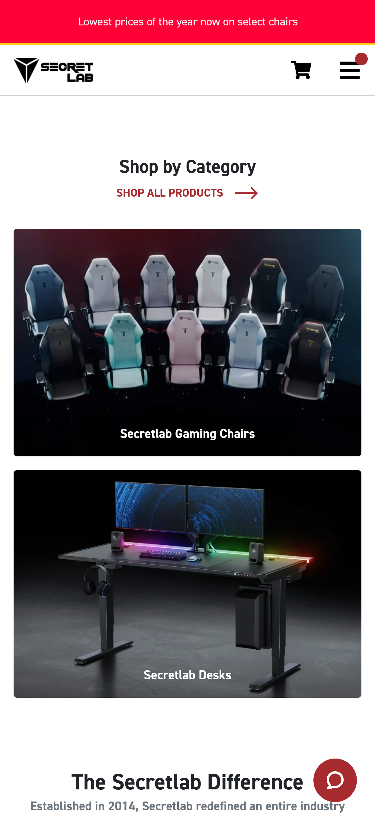
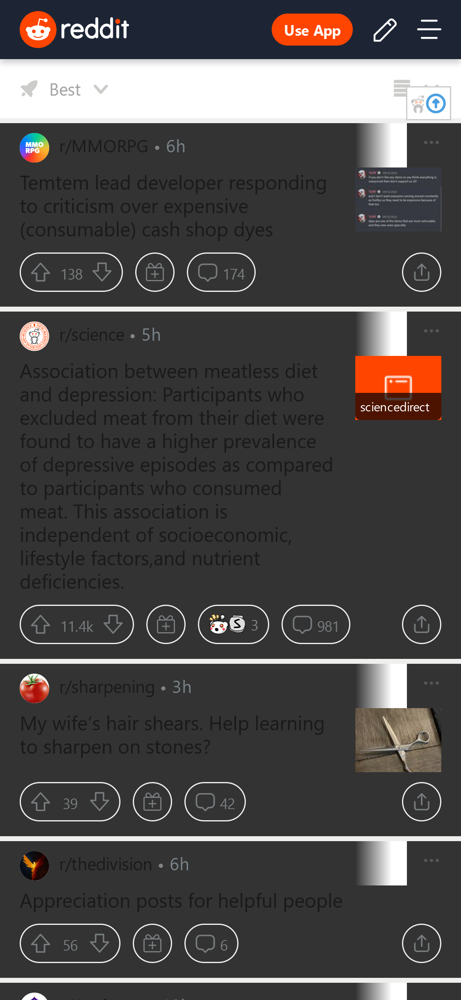

Alignment
Crucial Company
crucial.com
The crucial mobile website is a good example of where alignment is consistenly applied. Priority services are displayed prominently and common tools are in common locations along with the header and footer. Help and other features are prominently displayed at all times for easy access to customer service. The scroll-based methodology was well used here.
White Space/Clean Design
Secret Lab Chairs
Secret Lab.co
The Secret Lab website makes great use of white space between items leading to distinction of focused elements. This draws the eye to the links provided and beckons the user to click the tantilizing images. The header is still visable but not overbearing and also makes use of the contrasting black and white.
Repetition
Reddit.com
Consistency and familiarity is Reddit's bread and butter when it comes to assuring users where information they are looking for is located on any page. Each thread and subreddit uses the same format to access the content, community and voting options. No matter the subject or subreddit has the same repeated layout.